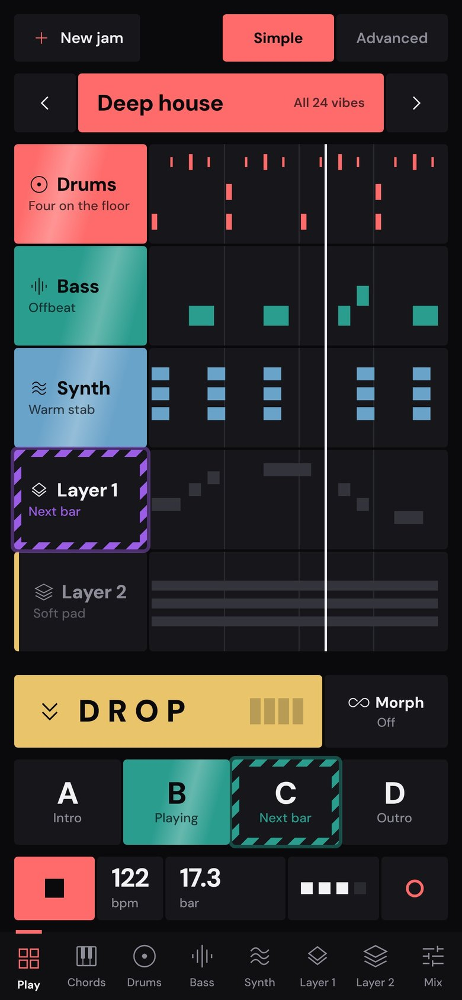
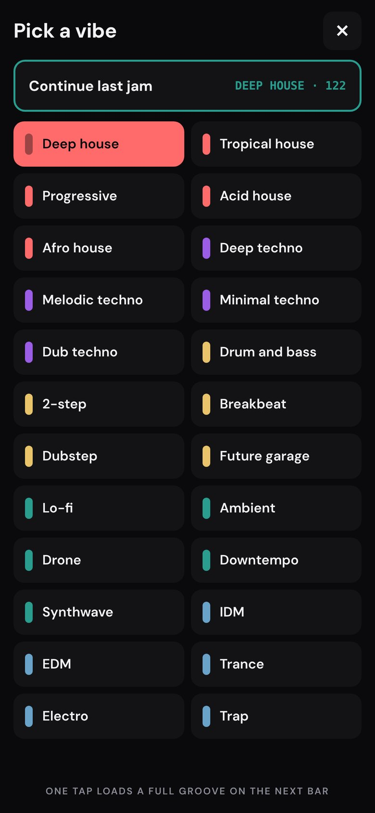
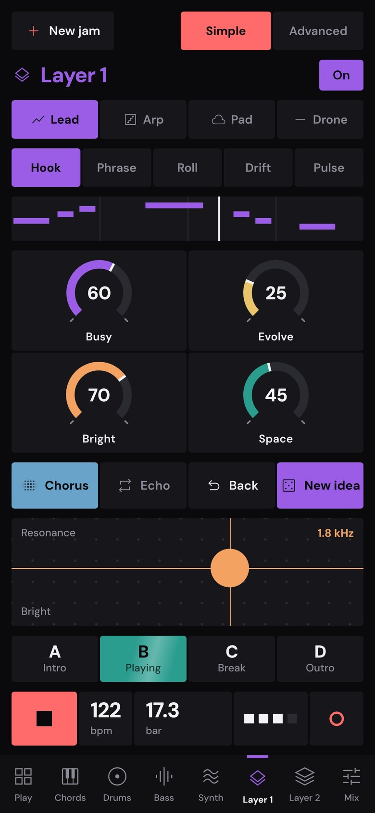
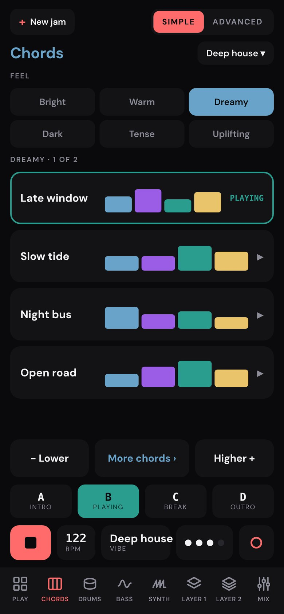
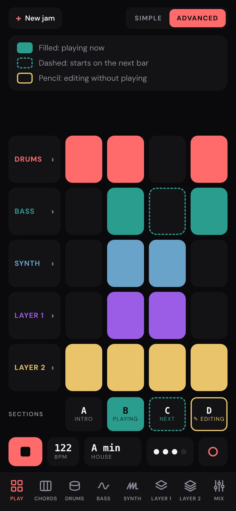
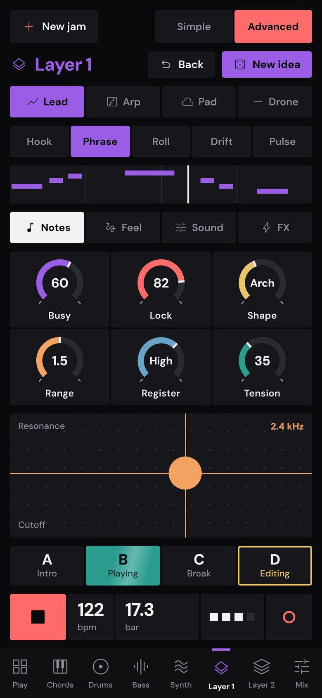
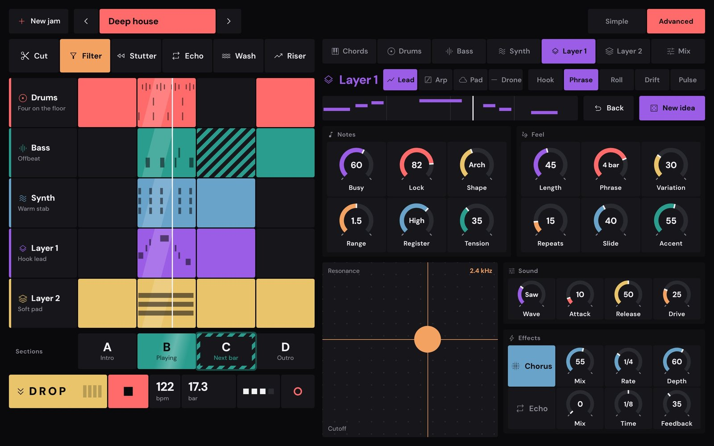
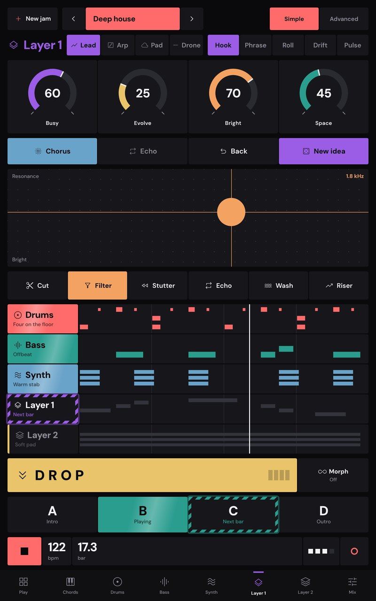

Groovebox build plan
Phase 2: a Simple mode that plays from one tap, an Advanced mode with every control, more ways to shape a lead, and screens that never scroll. Phase 3: tablet layouts that turn it into a pad controller and synth on one screen.
Where it stands
What you said after playing it
- Chords and pads sound great. Kept as they are.
- The lead lacks variety. Today it is one generator: every note the same length, one register, no phrase.
- Chords still feel advanced. You should never need to know a scale or a progression.
- Scrolling is hard because the whole screen is controls.
- The main tab's two rows of sections are confusing.
- You want one app-wide switch between a plain Simple mode and an Advanced mode.
The screens






Mockups, not the app. Swipe sideways. Names and dial values are placeholders. The vibe picker, Simple Chords and Advanced Play are still drawn in the older rounded look; their layout stands.
The look
- You can see the music. Every instrument shows the bar it is playing as a lane of notes, and one playhead sweeps across all of them.
- Near-square corners and tight gaps, so a screen reads as one panel. Only dials and the XY dot are round.
- Hatching means "starts on the next bar".
- Dials with square-cut arcs, tick marks and a pointer.
- Flat: no shadows or glow. Same colours.
- One typeface: DM Sans everywhere. Hierarchy comes from weight, size and letter spacing.
- Line icons (Material Symbols) beside instrument names, modes, effects, punch pads and actions. An icon always sits next to its word.
- Movement that locates things: a lighter band travels across anything that is sounding, hatching marches and a ring pulses on anything queued, the playhead sweeps the lanes, DROP fills as it builds. It can be switched off, and audio always comes first.
What phase 2 adds
Simple and Advanced
- One switch in the header, remembered between launches.
- It changes what is shown, never what is heard. Switching mid-jam is silent and loses nothing.
- Every Simple move shows up in Advanced. Start simple, then go deeper on the same jam.
- Simple uses plain words only.
Vibes
- 24 complete starting grooves in five families.
- One tap sets everything: tempo, chords, beat, bass, sounds, leads and four arranged sections.
- The app opens on the vibe picker, with Continue last jam first.
- The vibe control sits on the Simple Play tab: arrows step to the previous or next vibe, the middle opens the picker. A new vibe starts on the next bar and the old jam stays as Previous jam.
- Each vibe is one data file. Adding one later needs no other change.
| Family | Vibes |
|---|---|
| House | Deep house, Tropical house, Progressive, Acid house, Afro house |
| Techno | Deep techno, Melodic techno, Minimal techno, Dub techno |
| Breaks | Drum and bass, 2-step, Breakbeat, Dubstep, Future garage |
| Slow | Lo-fi, Ambient, Drone, Downtempo, Synthwave |
| Other | IDM, EDM, Trance, Electro, Trap |
Simple controls
| Instrument | Picker | Four dials |
|---|---|---|
| Drums | Beat | Punch, Hats, Swing, Level |
| Bass | Rhythm | Bright, Weight, Punch, Level |
| Synth | Sound | Bright, Punch, Space, Level |
| Layers | Lead style | Busy, Evolve, Bright, Space |
Simple chords
- Pick a feel (Bright, Warm, Dreamy, Dark, Tense, Uplifting), tap one of four progressions. More chords shows the next four.
- At least 120 progressions, four or more per feel for every vibe.
- Higher and Lower move the whole song up or down, with no note names.
- Advanced keeps the chord editor you have now.
Lead styles
| Style | What it plays |
|---|---|
| Hook | A short motif with a clear shape, repeated. |
| Phrase | A line over 4 or 8 bars that calls, answers and resolves. |
| Roll | Driving sixteenths with slides, accents and octave jumps. |
| Drift | Sparse long notes that move by step. |
| Pulse | The lead you have now. |
Twelve knobs shared by every style: Busy, Lock, Shape, Range, Register, Tension, Note length, Phrase, Variation, Repeats, Slide, Accent.
New idea and Back on both layers. Back restores the previous lead note for note.
Screens
- Simple never scrolls or swipes, in any direction. Everything it has is on the screen, and it is enough for a whole jam.
- Advanced never scrolls up and down. A tab that needs more room gets pages with large chips. This is where the fine control lives.
- Text always fits its tile: it never wraps, gets cut off or spills over the edge. Text that is too wide is drawn smaller; only if that fails is the label shortened.
- The most-used controls sit at the bottom, in thumb reach: the section strip, then play and record, then the tabs. They are in the same place on every tab.
- One row of sections on every screen. A tap always means: play it from the next bar.
- Three states: playing (filled), next (dashed), editing without playing (pencil, Advanced only).
- Four beat dots in the play bar show when the next bar arrives.
- The last jam survives a reload.
Effects
- Two effect slots on every instrument, each holding one of twelve effects.
- Simple: two big on/off buttons per instrument, named after the effects. The vibe chooses which two and how they are set.
- Advanced: pick the effect for each slot and turn its three knobs.
- Moving effects run in time with the tempo.
| Effect | What it does |
|---|---|
| Chorus | Thickens and widens. |
| Phaser | A slow sweeping whoosh. |
| Flanger | A metallic jet sweep. |
| Fuzz | Hard distortion. |
| Crush | Gritty, digital, lo-fi. |
| Tremolo | Volume pulsing in time. |
| Pan | Moves left and right in time. |
| Gate | Chops the sound into a rhythm. |
| Ring | Bell-like, robotic. |
| Vowel | A filter that makes it talk. |
| Shifter | Detuned, alien. |
| Echo | A ping-pong delay of its own. |
Phone load: a slot that is off costs nothing. The row that builds this measures all ten slots on at once; if that is too heavy, the limit becomes six active slots across the app.
The Drop
One large DROP button on the Simple Play tab. It turns whatever section is playing into its biggest moment and keeps it there until you switch it off.
| Stage | What you hear |
|---|---|
| Build | 2, 4 or 8 bars to prepare: bass filtered out, a roll speeding up, a riser, growing reverb. |
| Cliffhanger | The last beat hangs: silence or one held chord. The tempo never changes. |
| Impact | A falling swoosh, a sub hit and a burst on the bar line. |
| Drop | The section with extra layers on synth, bass, drums and leads. It stays on. |
| Wind-down | Press again: over 2 or 4 bars the layers fall away, into the same section or one you tapped during the drop. |
- Bigger means wider, not louder. The drop sits at the same loudness as the section. The size comes from added layers spread across the stereo field: detuned voices panned wide, octave doubles, open hats and percussion out to the sides.
- Each vibe has its own version. Deep techno's is restrained, Ambient's and Drone's are a slow bloom, EDM's is the full thing.
- The button counts down the bars of the build and the wind-down, and stays lit while the drop is on.
- It changes nothing permanently. The extra layers sit on top and leave your knobs where they were.
- Advanced adds four settings: build length, cliffhanger, wind-down length and Width.
Ambient, Drone and Morph
Two vibes for coasting
- Ambient is soft and tonal. Drone is darker and stays on one note or chord for a long time.
- Long everything: fades and reverb tails up to 20 seconds, chords that last 4 or 8 bars, tempo from 60.
- A Drone mode on the layers: one or two held notes that never retrigger and glide when the chord changes.
- Swooping pads: pitch glides between chords.
- Very slow movement that ignores the tempo, with cycles up to two minutes, on filter, pitch, width and space.
- An air layer: filtered noise that breathes.
Morph
- One switch that lets the jam change by itself, slowly. On by default in Ambient and Drone.
- What it moves: brightness and space drift, a lead changes a note or two now and then, pads change voicing, instruments drop out and return, and optionally the section moves on.
- Hands win. A control you touch is left alone for 16 bars.
- Simple: an on/off and a Speed dial. Advanced: a switch per thing it may move.
Phase 3: tablet


Three layouts
- Phone, tablet portrait, tablet landscape, chosen by screen size. Rotating mid-jam leaves the music running.
- Extra space shows more at once. It is not the phone layout made bigger.
- Nothing scrolls on a tablet, in Simple or Advanced.
Landscape: the desk
- Left half, always there: punch pads, the instruments-by-sections grid as large pads with a level meter per instrument, the sections, play and record.
- Right half: seven buttons to choose Chords, Drums, Bass, Synth, Layer 1, Layer 2 or Mix, and that panel in full.
- Advanced shows every knob at once: a lead's twelve knobs, its sound and its XY pad together; drums as one grid of every voice by 16 steps; the mix as faders.
Punch pads
| Pad | What it does |
|---|---|
| Cut | Drums and bass cut while held, back on the next bar. |
| Filter | The whole mix sweeps dark while held, opens on the next beat. |
| Stutter | The last half beat repeats while held. |
| Echo | One tap throws the mix into the delay for a bar. |
| Wash | One tap throws it into the reverb for a bar. |
| Riser | A noise riser sweeps up while held and falls on release. |
Several can be held at once. On a phone they are a page of the Mix tab. On a tablet the DROP button sits beside them.
It moves with the music
- Pads pulse when their instrument sounds, and step rows show the playing step.
- Dials move when a macro, the filter wobble or a punch pad moves them.
- Many fingers: two dials, the XY pad and a pad, several pads, all at once.
- Audio comes first. The animation drops frames under load and can be switched off.
Sounds, beats and rhythms
- 24 beats or more: Four on the floor, House shuffle, Techno, Minimal, Dub, Acid, Afro, Tropical, Progressive, 2-step, Garage shuffle, Breakbeat, DnB two-step, DnB roller, Halftime, Dubstep, Boom bap, Trap, Electro, Trance, EDM, Downtempo, Synthwave, Glitch.
- 14 bass rhythms: Offbeat, Rolling, Long notes, DnB sub, Octave bounce, Acid line, Dub, Reese hold, Wobble, 808 glide, Arp bass, Pedal, Garage skip, Walking.
- 10 synth rhythms: Stabs, Offbeat, Sustained, Dub chord, Pluck eighths, Gate, Skank, Swell, Broken chord, Push.
- 8 or more sounds per instrument, such as Sub, Acid, Reese, Wobble and 808 for bass; Warm stab, Dub chord, Supersaw, Soft keys and Glass for synth; Bell, Whistle and Airy for leads.
What the engine gains to make them: two more drum voices (Perc, Shaker), 16-step beats with hat rolls, a noise and an FM oscillator, a tempo-synced filter wobble, and a lo-fi master (crush, wobble, noise). All synthesized, each switchable off.
Rows
Chat 1 · the screens
One row of sections, no scrolling, the Now view
Done whenNothing scrolls and no label wraps at two phone sizes; a section tap means the same thing everywhere; a reload brings the jam back.
Simple and Advanced
Done whenSwitching mode changes no sound; every Simple move is visible in Advanced; Back restores the previous lead.
Chat 2 · vibes and chords
Vibes
The format, the picker, the vibe control, and the first eight: Deep house, Tropical house, Deep techno, Melodic techno, Drum and bass, 2-step, Lo-fi, Ambient.
Done whenAll eight load and play with every instrument audible; another is one new file. Whether each sounds like its name is your call.
Simple chords
Done whenA progression can be chosen and changed without seeing a scale or degree; the whole library passes its in-key test.
Chat 3 · the leads
Lead styles
Done whenEach style passes its own tests and the five give clearly different patterns from the same seed.
Lead screens
Done whenEvery lead knob turns mid-jam with no stuck note; both modes fit without scrolling. Whether there is enough variety is your call.
Chat 4 · sounds and effects
Sound additions
Done whenEach addition is audible, can be turned off, and the phone load is measured before and after.
Effects
Done whenEvery effect is audible on every instrument and switches mid-jam without a click; Simple needs no knob to use them; the phone load is reported.
Chat 5 · the other vibes
The other sixteen vibes and the library
Done whenAll 24 load and play, each with its own effects; every list meets its count; every name fits its tile.
Chat 6 · the Drop and Morph
The Drop
Done whenThe drop measures as wide but no louder than its section in all 24 vibes; it stays on until the second press; the wind-down lands in the right section; afterwards the song is identical to before. Whether it goes BAM is your call, vibe by vibe.
Morph
Done whenTen minutes of Ambient never repeats a 16-bar stretch and never leaves the key; the same seed replays the same journey; a control you touched is left alone. Whether it is good to coast on is your call.
Between the phases
APK
Done whenGitHub builds an APK you can install; it works offline.
Phase 3 · chat 1 · tablet layouts
Three layouts and the docked pads
Done whenFour tablet sizes pass in both modes; rotating while playing keeps the music going; the phone layout is unchanged.
Advanced without pages
Done whenOn a landscape tablet no Advanced panel has pages.
Phase 3 · chat 2 · performance
Punch pads, movement and many fingers
Done whenEach punch pad starts and ends on the beat or bar it should; two controls move at once; animation can be turned off. Whether you want to jam on it for hours is your call.
Always open
Retouch
Runs on your notes, as often as you send them.
Later
- Automatic transitions on a section switch: fill, filter drop.
- A play pad that plays in-key notes by touch.
- One part from another vibe: only its drums, chords or sounds.
- Advanced chords: 7ths, 9ths, borrowed chords, inversions.
- Knob snapshots per section, morph between two leads, offline re-render.
Never: samples. Every sound stays synthesized.
How a chat runs
- A Sonnet 5.5 chat runs each bundle and stays thin. Fable only designs, as here.
- Three fresh Opus 5.5 agents per row: builder, a reviewer that never saw the build, fixer.
- Scripts judge the result; your ears judge the sound.
- Every chat ends with the next starter. The starter text never changes.
- The repo holds the detail: spec section 8 and the backlog, on branch phase2-design until save and record closes.